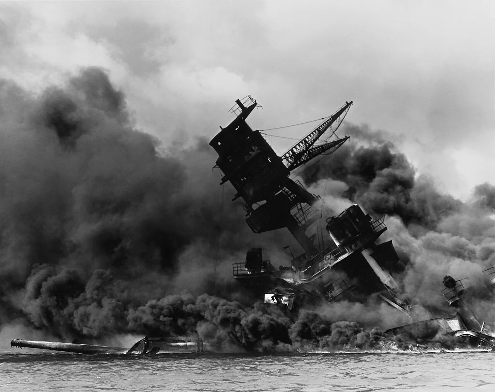
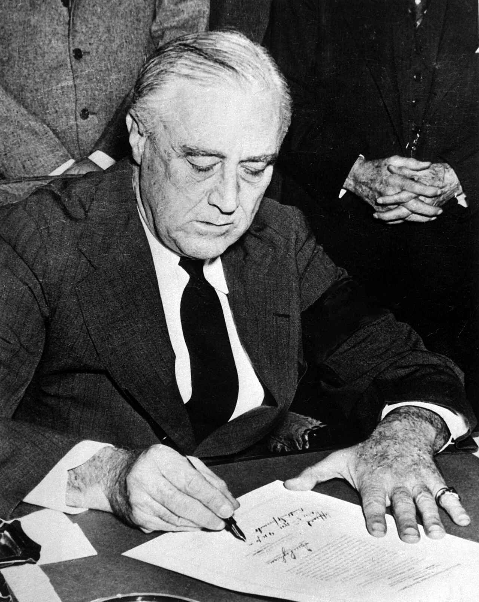
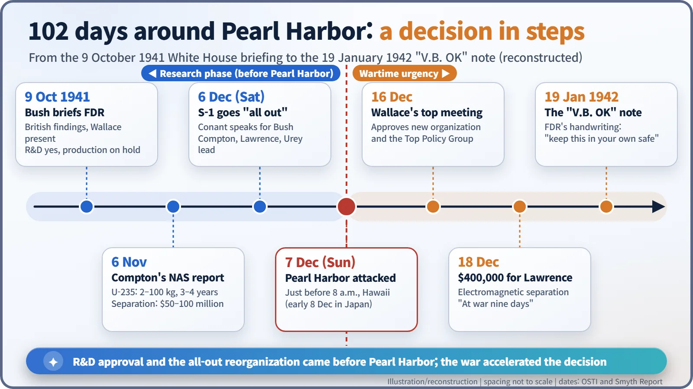

Nuclear History · 084
A Saturday and a Sunday, One Day Apart — Pearl Harbor and the Decision to Build the Bomb (1941)
Research was approved in October and an all-out effort announced the day before Pearl Harbor; the attack changed the pace, not the decision.
It is often said that the United States decided to build the atomic bomb because of Pearl Harbor. The dates tell a different story: President Roosevelt approved accelerated research on 9 October 1941, and an "all out" reorganization of the uranium programme was announced on Saturday 6 December, the day before the attack. Pearl Harbor did not make the decision; it changed how fast it moved.
A Saturday and a Sunday
Saturday, 6 December 1941. At a meeting of "S-1", the group of scientists running the US government's uranium research, Harvard president James B. Conant (1893–1978) took the floor. Speaking for his boss, Vannevar Bush (1890–1974), he announced that the uranium work would now be an "all out" effort. Arthur Compton, Ernest Lawrence and Harold Urey were named to lead its main lines of work. According to the official report published after the war, most members strongly welcomed the new course. [3]
The next morning, a Sunday, Japanese carrier aircraft appeared over Pearl Harbor in Hawaii. It is often said that "after Pearl Harbor, America decided to build the atomic bomb." Put the dates in order, though, and the story runs the other way round.
Homework from Britain
The background lies in the summer of 1941. In July, Britain's MAUD Committee finished a report concluding that a bomb made from uranium-235 could be ready during the present war. When the Australian-born physicist Mark Oliphant (1901–2000), then working in Britain, visited the United States in August, he was startled to find that Lyman Briggs, chairman of the American uranium committee, had locked the British reports in his safe without showing them to his committee. Oliphant went round to Lawrence, Conant and others, arguing that this was a job only the United States could take on, and the message eventually reached Bush. At that point the United States was not yet at war. [4]
9 October: research yes, factories not yet
On 9 October 1941, Bush met President Franklin D. Roosevelt (1882–1945) and Vice President Henry A. Wallace (1888–1965) at the White House. He summarized the British findings and laid out the likely cost, the time involved and how uncertain it all was.
The President's answer was a qualified yes. Bush could explore with the Army what construction might eventually be needed, but the work was to stay at the level of research and development; any decision to build production plants was put off. Policy was to be handled by a very small circle: the President, the Vice President, Bush, Conant, Secretary of War Henry Stimson and Army Chief of Staff George Marshall, a group usually called the Top Policy Group. [1]
November: the numbers arrive
Bush also wanted an independent American judgement. On 6 November, a National Academy of Sciences (NAS) review committee chaired by Arthur H. Compton (1892–1962) delivered its third report. Its key claims: bringing together a sufficient mass of uranium-235 quickly would produce "a fission bomb of superlatively destructive power"; the mass required could "hardly be less than 2 kilograms nor greater than 100 kilograms"; bombs might be available in significant quantity "within three or four years"; and separating the isotope would cost $50–100 million. [3] [1]
A range from 2 to 100 kg is very wide, which tells you how little anyone really knew. Uranium-235 makes up only about 0.7% of natural uranium, so simply extracting it was an enormous industrial problem. Bush forwarded the report to the President on 27 November. (These dates follow the US Department of Energy's official history; some accounts give 1 November for the report and 19 November for its delivery.)
And then, Sunday morning
On 7 December, just before 8 a.m. Hawaii time (records give 7:48 or 7:55), Japanese forces attacked Pearl Harbor. In Japan it was already the early hours of 8 December. American deaths numbered 2,403. The next day Roosevelt signed the declaration of war against Japan. [5]


What changed was the speed, not the decision
Whether to pursue the bomb had already been settled. What changed was the mood and the scale. On 16 December, a high-level meeting chaired by Wallace approved the new organization and the Top Policy Group arrangement. On 18 December, the S-1 committee gave Lawrence $400,000 for his electromagnetic separation work. Conant told the meeting that such an effort "was justified only by the military value of atomic bombs." The official report recorded that the whole meeting was "pervaded by an atmosphere of enthusiasm and urgency," and Conant later recalled that "the country had been at war nine days." [1] [3] [4]
Think of it as driving a car. The engine was started in October, and the car was put into gear on 6 December. Pearl Harbor was what pushed the accelerator to the floor.

A note for the safe
On 19 January 1942, Roosevelt sent Bush a short handwritten note: "V.B. OK — returned — I think you had best keep this in your own safe FDR." The note is often presented as the official go-ahead for the atomic bomb. Historians, however, disagree about which document it was returned with and whether it should be read as a formal approval. It is safest to treat it as a much-quoted symbol of approval rather than the decision itself. [1] [6]
The final approval to build full-scale production plants came almost a year later, on 28 December 1942. By then the project had passed from the scientists' committee to the Army Corps of Engineers. The $50–100 million estimated in late 1941 grew to roughly $2 billion by the end of 1945. [2]
The bomb, in other words, was not the product of one dramatic decision. It was a staircase: research approval, the all-out reorganization, emergency wartime funding, and finally approval to build. The war did not build that staircase. It changed how fast the country climbed it.